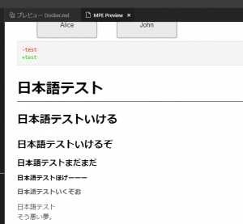
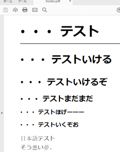

Introduction
前回の続き。
どうもMarkdown Preview Enhancedでもヘッダー、フッターの調節ができる模様。
よく考えたら、markdown-pdfと同じpuppeteerを使っているのだから当然と言えば当然なのかな?
Resolution
Puppeteerのインストール
前回は省略したので。
Chocolatelyが入っているとインストールが簡単です。
管理者でコンソールを起動します。
1 |
|
続いてNode.js command promptを起動します。
1 | > npm install -g puppeteer |
-gオプション必須です。
起動中のVisual Studio Codeは再起動します。でないとpuppeteerが反映されません。
ヘッダー・フッターを付与する
Markdownファイルの先頭に下記のような記述を追記。
1 | --- |
ただし、デフォルトだと出力文字がすごく小さい。
この領域は、タグが使える。なので下記のようにフォントを使って調整可能。
1 | --- |
ヘッダー・フッターにはテンプレートが使える。
| 定義 | 意味 | 使用例 |
|---|---|---|
| date | 日付 | <span class='date'></span> |
| title | ファイル名 | <span class='title'></span> |
| url | フルパスファイル名 | <span class='url'></span> |
| pageNumber | 現在のページ番号 | <span class='pageNumber'></span> |
| totalPages | ドキュメントの総ページ数 | <span class='totalPages'></span> |
背景を印刷する
前回言及したコードハイライトのブロックの背景が白くなる問題の解決。
1 | --- |
日本語が文字化け
フォントの問題と思われる。

プレビュー

PDF出力
中国語フォントっぽいなぁ… ただ、puppeteerのバージョンの問題という情報が。

{kind=link}
{kind=link}
1.10.0が問題とのことなので1.9.0に戻してみる。
1 | > npm install -g puppeteer@1.9.0 |
直りました。
{kind=link}
フォント変更
前回との同じくCSSをカスタマイズします。
1 | .markdown-preview.markdown-preview { |
{kind=link}